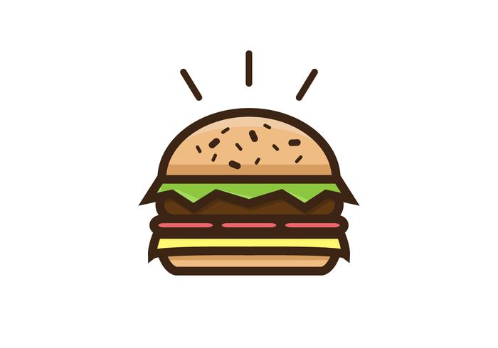
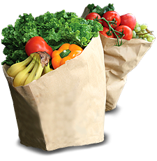
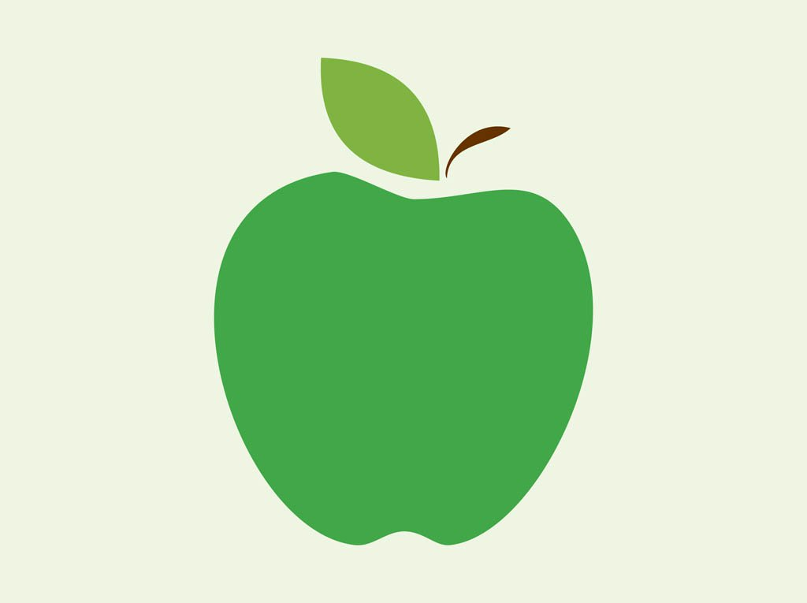
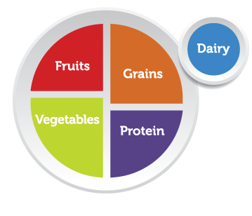

Lo demas y la conclusion
Nosotros tendemos a enfocarnos más en la proteína o en los granos de nuestra dieta porque la verdad son mas ricas y uno se agrada mas en comerselas. Sin embargo, hay que aprender a medir nuestro consumo en esta mitad del plato porque el desequilibrio de este plato es uno de los primeros factores de una enfermedad relacionada con el exceso del consumo o el desafio del consumo. Anormalidades de como manejamos el plato también pueden ser muy adictivas como la bulimia o la anorexia. Para ser saludable y aprovechar tu cuerpo al 100%, es muy importante manejar nuestro plato individual con cuidado. Gracias por su atencion :)

Las Verduras
Igual que las frutas, las verduras son importantes por la abundancia de vitaminas por las que contienen. También, similar a las frutas, pueden reducir mucho la posibilidad de tener una cierta anormalidad en tu cuerpo.

Las Frutas
Las frutas poseen una importancia enorme en la dieta cotidiana. Están llenas de vitamina A, C y E que también son muy importantes para el desarrollo del cuerpo. Además, reducen las posibilidades de atraer diabetes, un derrame cerebral y muchas otras enfermedades y anormalidades corporales.

Introduccion
La nutrición se refiere a la administración de lo que nos alimentamos y lo que metemos a nuestro cuerpo. Se requiere un equilibrio entre los diferentes tipos de comida para ser saludable, y esto es lo que voy a intenter a transmitir en esta exposición.
